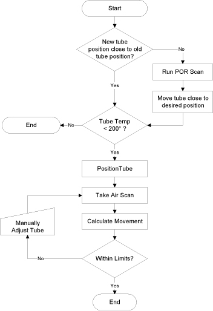

Operating Documentation
Direction 5193891-800, Rev# 5
LightSpeed 5.X Pro16 Limited Access Service Information (Adv)
Operating Documentation |
| Required Persons | Preliminary Reqs | Procedure | Finalization |
|---|---|---|---|
| 1 | Timing Not Applicable | 30 mins | included |
The purpose of the Z-Align procedure is to move the X-Ray Tube to be in alignment with the Detector and Collimator. The Detector and Collimator were aligned with the previous Tube, and Z-Align will correctly place the new Tube in the Z-Direction. The procedure can be summarized as follows:
Verify Tube Temperature is less than 200°C
Run Beam On Window (BOW) scan
Perform Tube Installation Certification, if needed
Calculate Z-Align
Move Tube
Illustration 1: BOW Alignment Process Flow

| Last Revised: | 10 October 2007 |
| Follow ALL required safety and PPE procedures customary for your organization, when working on this product. | |
| NOTE: | For the BOW tool to work correctly, the X-Ray Tube needs to be close to proper alignment with the Collimator and Detector. If the Tube is not close to where it needs to be, the BOW tool will return erroneous data. Generally, if the pencil mark and adjuster screw tips are used in the tube change procedure (only applies to tubes that are not Performix Ultra/Adv), then the tube will be very closely aligned in two directions. A POR scan with film and corresponding Tube movement can correct this problem. |
| Condition | Reference | Eff |
|---|---|---|
Only trained service personnel should service the GE CT Scanner. | - | - |
Tube Temperature <200° C | - | |
The X-Ray Tube must be close to proper alignment with the Collimator and Detector. (See NOTE, above, for details.) | - | - |
The fast Z align procedure is intended for a normal tube installation with no other system issues. | - | - |
The system had a prior good full baseline alignment (POR, BOW, CBF, ISO) performed either at CT manufacturing or in the field. | - | - |
Collimator or Detector have not been moved since the last full baseline alignment. | - | - |
No image quality problems exist aside from the tube. | - | - |
Run the Beam On Window (BOW) alignment tool, take a scan, and calculate the movement vectors. See the Beam on Window Alignment procedure for more details.
Illustration 2: Beam on Window Alignment GUI

Perform Tube Installation Certification, if needed. Refer to SmarTube™ Setup.
Determine system type. For RT systems, the correction factor is 1/5.5 -- otherwise, the correction factor is 1/4.85.
Table 1: Correction Factors, by 5.X System Type
| System | Divide By |
| RT | 5.5 |
| Pro16 | 4.85 |
| Ultra | 4.85 |
| Plus | 4.85 |
| 16 | 4.85 |
| DST w/ HP-60 | 4.85 |
Calculate the z-align movement. (This is the amount that you will move the tube. The direction will be either forward or backward [towards the table or the slip ring].)
BOW Measured = Movement vector for MIDDLE CHANNEL (The High and Low channel vectors can be noted to see that the detector is not skewed, but do not use for tube movement calculation)
Tube Z movement = BOW Measured / Correction Factor (for either unit, mm or in)
Move the tube by Z movement value amount in the OPPOSITE direction that the flats measurement tells you to.
Example:
BOW Movement vectors:
BOW high channel: -0.446mm -0.018in
middle channel: -0.653mm -0.026in
low channel: -0.611mm -0.024in
If the movement vectors are negative (-), move the POR adjuster screw clockwise (CW).
If the movement vectors are positive (+), move the POR adjuster screw counter-clockwise (CCW).
(For RT) In this example, you would move the tube 0.119mm (0.005in or 1.04 flats) clockwise (cw). [0.653mm / 5.5 = 0.119mm OR 0.026in / 5.5 = 0.005in.]
(For Non-RT) In this example, you would move the tube 0.131mm (0.005in or 1.04 flats) clockwise (CW). [0.653mm / 5 = 0.135mm OR 0.026in / 4.85 = 0.0054 in]
| Middle Channel | ||
| + | - | |
| Move POR Adjuster Screw: | Counter-clockwise (ccw) | Clockwise (cw) |
Install a dial gauge for the POR adjustment on the dial mounting bracket.
| NOTE: | See appropriate tube change procedure for illustration of dial mounting bracket. |
Loosen the tube mounting bolts 1 turn maximum.
Using the POR adjustment screw, adjust the tube according to your Z-align calculated value.
Tighten the tube mounting bolts. You should find that tightening the bolts gradually in a cross pattern will reduce tube shifting during tightening.
| NOTE: | Exercising patience while tightening the bolts will result in accurate positioning and reduce the number of Z-Align iterations. |
Run another BOW scan to verify that the alignment is within specifications. If it is not, repeat z-align procedure.
Turn M12 tube mounting bolts to pre-load torque specification as shown in Table 2.
Table 2: Pre-Load Torque Specification
| 25 ft.-lbs | 33 N-m | 295 in-lbs | 340 kg-cm |
Apply final torque on all four M12 bolts according to the values specified in Table 3.
Table 3: Final Torque
| 49 ft.-lbs | 66 N-m | 590 in-lbs | 680 kg-cm |
No finalization required.